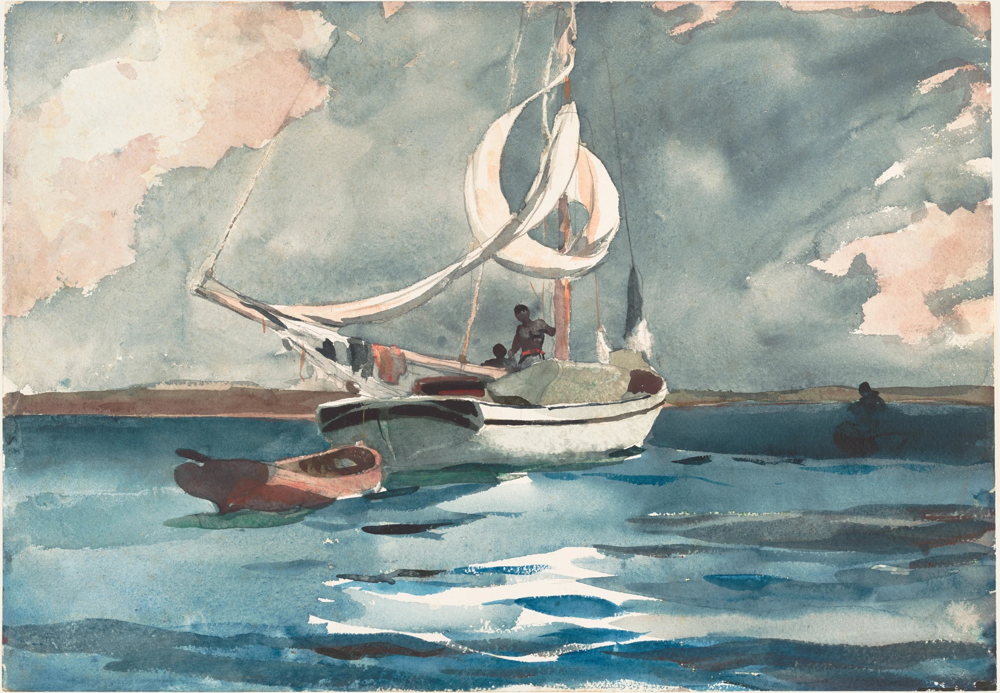

In December 1884 Winslow Homer, forty-eight years old, sailed from New York to Nassau with his father. The Century Magazine had sent him to draw the island for an article about a winter resort, and he made the drawings for it. What he brought home, though, was a stack of watercolours of the harbour: sponge boats, divers, the water over the white sand, the sky before a squall. He went back in the winter of 1898, alone, for about two months, and painted at least two dozen more. This is one of them, a sloop at anchor off Nassau with her sails half lowered and a squall coming up behind her.
He worked out of doors, quickly, on a block or a sheet pinned to a board, on heavy English paper from Whatman’s mill, warm white with a tooth to it. First a pencil drawing, so light that it barely survives under the paint: the line of the far shore, the hull, the curve of the sails, the dinghy. Then the paper was wetted and the sky and the sea went on in a few broad passes, with colour dropped into the wet sheet and left to find its own edges. What came after had to wait for that to dry.

Wet paper takes colour differently. A touch of rose laid into a sheet that is already flooded runs out from the brush on its own, along the paper’s fibres, until the water thins and stops it; its edge is not a line but a fringe, and where it meets the grey that was dropped in beside it the two go into each other. Nothing about it can be corrected. The painter decides how wet the sheet is, how loaded the brush, and when to stop. Then the water evaporates, the edges go first, the colour dries a shade lighter than it went on, and the pigment settles into the hollows of the paper, which is why the sky here has a grain you can see from across a room.
Everything that had to be exact went on later, onto dry paper: the far shore in one pass, the hull and the shadows of the sails, the dinghy, the long dark strokes of the swell, each laid once and left. Wet-on-dry paint stops where the brush stops, and it dries with a hard rim where the pigment has run to the edge. Last of all Homer took a knife to it. Where the sun lay on the water he scraped the dry wash away and the top of the paper with it. The cuts are hard and ragged against the soft blue around them, the torn fibres catch the light the way a moving surface does, and because everything round them is still the wash that went on wet, they look wet too.
Back in New York the oils came slowly and sold slowly. The Gulf Stream, which he made from the sketches of this same winter, stood unsold for seven years. The watercolours went to the dealers in a bundle and sold, a few at a time, for a fraction of an oil’s price, to people who could hang a whole winter in the islands in a small room. Homer knew it, and from the winters he spent in the South he kept coming back with more.